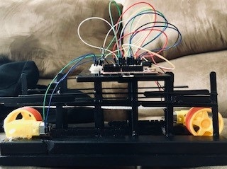
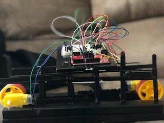

Ping Pong Project
arduino, ping pong ball, and woodThis class project challenged students to build creative structures powered by an arduino bread board to get a ping pong ball across or over a net.
After multiple failure designs such as a carboard cannon, my partner and I decided on a conveyor belt. Try after try the carboard seem ineffective so the change from carboard to wood was necessary.
The base of the conveyor belt consisted of four seperate wood boards. The conveyor belt itself was made out of two arduino wheels and mesh tape. For aesthetics it was covered in galaxy paper and named "THE MILKY WAY CONVEYOR BELT."
 